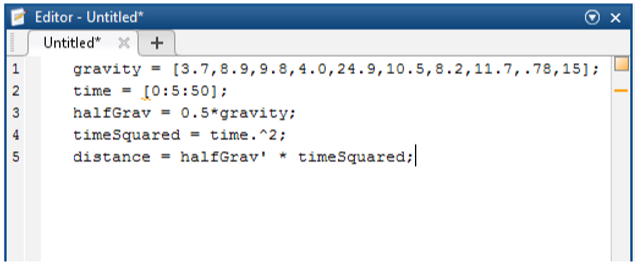

MATLAB 1
Introduction to MATLAB
Introduction
MATLAB is an advanced computing environment that is used in a diverse array of applications: mathematics, signal processing, control design, financial modeling, statistical analysis and computational biology. MATLAB contains an interactive environment to perform calculations and data analysis, and to create graphs, pictures and movies. Additionally, MATLAB contains a programming language that allows one to create reusable functions, procedures and algorithms. MATLAB gets its name from “MATrix LABoratory” and fittingly, matrices are the basis of almost all of MATLAB’s calculations. This class will work through the basics of using the MATLAB interface and basic syntax of the programming language.
About this Class
This class will give an introduction to MATLAB, focusing on array creation and manipulation, and plotting. In this class we will be analyzing how the gravity of different planets in our solar system effect a falling ball.
Prerequisites
None.
Other requirements
MATLAB Interface
The MATLAB interface consists of different panels, which can be moved about the screen. Some panels may be combined in one window and their names are shown on different tabs. Clicking on a tab will bring that panel to the front. Different panels can be managed from the layout menu in the environment tab at the top of the screen. The default interface varies between versions of MATLAB
MATLAB Interface
Lanching MATLAB
- Click the Windows Start icon on the bottom left corner of the screen.
- Type MATLAB into the search bar and click on “MATLAB 2014a”. A window like the one below will be seen.

MATLAB Environment
Command Window
The Command Window is the main screen of MATLAB. This is the area where calculations are entered and instructions are given to MATLAB. It also displays the results of the calculations and any errors in your code.
Workspace
The Workspace panel shows all of the variables that MATLAB currently has stored. The panel also gives information about the value or size of the variable, a description if one exists, and the max and min of the variable. Double clicking on any variable will open a spreadsheet that shows what the variable contains and allows you one way to edit the variable.
Command History
The Command History panel shows all of the instructions and/or calculations that have been entered in the Command Window. Double clicking on any line in the Command History will rerun that command.
To display the Command History go to the environment panel towards the upper middle part of the screen. Select Layout > Command History > Docked.

Current Folder
The Current Folder panel shows all of the user files and functions that are available for MATLAB to access. The Current Directory can be changed by entering a new path in the Current Folder box at the top of the screen.
M Code
Basic Operators
The simplest use of MATLAB and M Code is using the Command Window as a calculator.
At the command prompt, enter 2 + 5
You can see that MATLAB responds with the answer. Notice that extra whitespace is ignored in MATLAB. MATLAB can understand all of the basic operators.
Try entering some of these:
- 9000 - 523
- 50 * 25
- 30 / 10
- 30^2 + 25
Additionally, MATLAB can understand more advanced operators.
- sin(90)
- cos(sin(90^2))
- atan(.5)
Finally, MATLAB has some built-in numbers. For instance, instead of entering 3.14159, you can just type in pi.
- pi - 3.14159
- eps - the floating point precision of MATLAB
- inf - infinity
Storing Variables
You may have noticed that during those operations, MATLAB returned the answer and on the line above that, it said “ans =”.
Additionally, you can note that “ans” was added to the Workspace window and its value is the result of the last operation
“Ans” is a default variable created by MATLAB to store the answer of the most recent operation performed in the Command Window. A variable is a reference to a memory location that contains a value. The usefulness of variables is that they can be quickly and easily referenced later. For example, it is easier to remember pi, than 3.14159.
- At the command prompt, enter ans.
- At the Command Prompt, enter radius = 5
- Enter volume = 3/4 * pi * radius ^ 3;
- Enter mass = 50;
You can see that it displays the value held inside of that variable. You can also use "ans" in new calculations.
In addition to the "ans" variable, you can create any variable that you want and assign it a value.
For example, let’s set up the radius, volume and mass of our ball.
When you hit enter, you can see that instead of “ans=”, MATLAB displays the variable name and then its value.
For the “mass” variable, MATLAB didn’t display anything. The reason for this is that we included a semicolon at the end of the line. A semicolon tells MATLAB to store the variable and not to display anything on the screen. As we work with more values, we will want to make use of the semicolon more often.
MATLAB can determine the data type of any variable without any explicit definition. MATLAB variables can store Boolean, numeric or text data. The variable names are case sensitive
Arrays and Matrices
Arrays are one of the basic building blocks of MATLAB. An array is a structure that allows you to store multiple values under one name. Any type (numeric, boolean, strings) of information can be stored in an array and its size is adjustable.

Visually, an array can be represented as a grid, where each cell represents an open area for information. There are many ways to create and access arrays in MATLAB.
Storing and Retrieving Data
One way to create an array is to type in the values individually by hand. Let’s try creating an array to hold the different gravitational pulls of each of the planets and an array that holds the order of the planets from the sun.
Making Arrays
- At the command prompt, enter gravity = [3.7, 8.9, 9.8, 4.0, 24.9, 10.5, 8.2, 11.7, .78, 15]
- Enter order = [ 1 2 3 4 5 6 7 8 9 10]
- At the Command Prompt, enter time = [0:5:50]
Notice that all of the values are contained within brackets. This signals MATLAB that you are working with an array. Within the brackets, either spaces or commas can be used to separate individual values from one another. Finally, only values of the same data type (numbers, strings, etc.) can be stored in the same array.
Let’s create another array containing the values of “time” that we want to analyze. We will use a different way to create this array.
In this method, we can specify a starting value, an increment value and an end value, and then MATLAB will automatically generate the values and store them in the array.
Note: that the default increment value is 1 and doesn’t need to be entered. For example, time = [0:1:50] can be written as time = [0:50]. We will be using this throughout this course
Indexing Arrays
Now that we have our arrays, we can call values from them. Unlike many other programming languages, arrays in MATLAB are 1-indexed, meaning the array starts counting at 1 (rather than starting counting at 0, which is how many other popular languages work).
To call a value from an array, type in the name of the array followed by the index you want, in parentheses. Let’s try retrieving the second planet’s gravity and the second time value.
- At the Command Prompt, enter gravity(2), time(2)
- At the Command Prompt, enter test = 4;
- Enter gravity(test) and notice the value that returns.
- At the Command Prompt, enter gravity(2:4)
Variables can also be used as indices.
You can also retrieve multiple values at once from an array.
For example, if you wanted to look at the middle 3 planets’ gravities, you can call all of those values at once. To do that, you use the “:” operator. We saw the colon operator earlier, when we were creating arrays to fill in values for us. The same idea applies when we are calling values.
This returned values 2 through 4 from the gravity array.
Matrices
In addition to one dimensional arrays, MATLAB can also store multidimensional arrays, also known as matrices.
To create a matrix, the same notation is used; however, a semicolon within the brackets is used to separate between rows of the matrix. Let’s create a matrix.
- At the Command Prompt, enter numbers = [1:5; 2 4 6 8 10; 1:2:9]
- At the Command Prompt, enter numbers(2,3)
- At the Command Prompt, enter numbers(2,:)
This will create a 2 dimensional matrix with 5 columns and 3 rows .
Accessing the values of a matrix works the same way as with an array, except that two indices are required. The first specifies the row and the second specifies the column. To call all of the values in a row or column, the colon operator can be used
Changing Values
After values have been entered in an array, those values can be overwritten or new values can be added. To overwrite a value, simply reassign that value to something new.
To enter a new value, assign the next index (remember that ‘=’ is used to assign values to a variable).
- Enter gravity(11) = 1.75
- Enter numbers(3,5) = 11
- Enter numbers(4,5) = 5
When you add a single value to a matrix, MATLAB keeps the matrix square and fills in the missing values with zeroes.
Deleting Values
To delete a value from an array, set the value to “[]”. Let’s delete the gravity value we entered for the 11th planet.
- At the Command Prompt, enter gravity(11) =[]
- At the Command Prompt, enter numbers(3,:) = []
MATLAB doesn’t allow you to delete a single value from a matrix, because that would result in a nonrectangular matrix. Instead, you can delete an entire row or column.
Manipulating Arrays and Matrices
MATLAB provides many ways to manipulate matrices. Operations involved concatenating, or joining, arrays together to form larger arrays or matrices; or performing calculations on the numbers in the array
Concatenating Arrays
Let’s start with combining the arrays containing the order of the planets and their gravities. The default direction for an array is horizontal - meaning that it only has 1 row. So, if we try combining the gravity and the order arrays, we would end up with an array that is 1 row by 20 columns. In this situation, we want an array with 10 rows and 2 columns, which means that we need to transpose (or flip the direction) the arrays and then concatenate them.
- At the Command Prompt, enter combined = [order’ gravity’]
The brackets are used as previously to create the matrix. They automatically take the values and store them next to each other. The ‘ works to transpose the arrays.
Calculating with Arrays and Matrices
Another way to manipulate matrices is to perform calculations on them. MATLAB allows for many mathematical operations on matrices. Let’s start calculating the distance traveled by the ball on each planet.
From basic physics, we know the equation is distance = 0.5*gravity*time2.
- At the Command Prompt, enter halfGrav = .5 * gravity
- At the Command Prompt, enter timeSquared = time.^
- At the Command Prompt, enter distance = halfGrav’ * timeSquared
We now have a matrix that tells us how far each ball fell at different points in time on different planets. The rows correspond to each planet and the columns correspond to each time point.
This multiplies every value in the gravity array by .5. Some operations are a little different when applied to matrices. For instance, if we time2, that would multiply the time array by itself, when what we really want is to square each value in the matrix. To do that, we need to use the dot operator.
The dot operator is used whenever you want to perform something on each individual value in a matrix, instead of using the rules of matrix multiplication.
The final step in our calculation of the distance travelled is to multiply the halfGrav matrix by the timeSquared matrix, but we must follow rules of matrix multiplication. That is, the first matrix must have the same number of columns as the second matrix has rows.

In our situation, we need to transpose (flip) the halfGrav array so that it has the right number of columns.
Built-In Functions
In addition to calculations, MATLAB has many built-in functions that can return information about the array. We are just going to talk about some of the basic functions. First, say we want to sum the values in our numbers matrix. We are going to search for a function to do this sum.
- 1. At the Command Prompt, enter help sum
- At the Command Prompt, enter sum(numbers)
MATLAB returns information about the function and a link to the help file that gives more information about the function. You can see that “sum” will sum across each column in a multidimensional array.
Some other common functions are:
| Function | Output |
|---|---|
| exp(x) | Exponent of x |
| sqrt(x) | Exponent of x |
| log(x) | Equivalent to ln(x) |
| log10(x) | Equivalent to log(x) |
| mod(x,y) | Modulus of y divided by x |
| round(x) | x rounded to the nearest whole number |
| size(x) | Returns the number of rows and columns in the matrix |
MATLAB also allows users to write their own functions, but that is beyond the scope of this class.
Built-In Matrices
MATLAB also comes with some built-in matrices that are useful in a variety of situations. They can provide easy access to some commonly used matrices, such as:
To access a built-in matrix, you need to specify the size and the type of matrix.
- At the Command Prompt, enter eye(5)
- Enter magic(4)
- Enter rand(4)
MATLAB Scripts
Scripts are MATLAB files that contain snippets of reusable code or functions. Most programming in MATLAB is done in a Script and then run in the Command Window. This is advantageous, because it is easy to go back and edit your code or make changes to values. Additionally, when you incorporate control logic or loops (which is beyond the scope of this class), Scripts are even more useful.
Using Scripts
Let’s try to write a Script for our distance calculation.
- Click the New Script button in the upper left corner of the screen. This opens up the Editor.
- Enter the following code into the Script: 
- Find the line distance = halfGrav’ * timeSquared in the Command History palette and drag it into your Script.
-
Press the save button at the top right corner of the page.
- Save the file as “distanceCalculation.m”.
- At the Command Prompt, enter distanceCalculation. Although our matrix was not displayed, the code did compute. We can see this if we enter distance = 0 and then re-enter distanceCalculation. Looking at our workspace, the variable distance changes from a value of 0 to a matrix of 10 x 11.
Instead of manually entering the code, you can also drag lines of code from the Command History palette directly into the Script.
To test out the code, we can highlight and press F9. We can also save the Script and write out the name of the file in Command Window.
Plotting
Another powerful feature of MATLAB is its plotting ability. MATLAB can create a multitude of graphs, such as line graphs, bar graphs, contour graphs, 3D graphs and weather maps. MATLAB can also create movies, which are a series of graphs shown sequentially.
2D Plotting
We will start by plotting the distance vs time graph from the data we created during the start of this class, using the plot function. The plot function plots each column of a matrix as a different series. Therefore, we again need to transpose our distance matrix, so that we can plot each planet as its own series.
1. At the Command Prompt, enter plot(distance’)
- Enter title (‘Distance traveled by Each Ball at a Given Time’)
- Enter xlabel (‘Time’)
- Enter ylabel (‘Distance’) Finally, we can also enter a legend to assign each line to a planet.
- Enter legend (‘Mercury’, ’Venus’, ’Earth’, ‘Mars’, ‘Jupiter’, ‘Saturn’, ‘Neptune’, ‘Uranus’, ‘Pluto’, ‘Planet X’)

3D Plotting
MATLAB also allows us to plot in three dimensions. We will use some built-in functions to generate a 3D graph. The meshgrid function is used to create the arrays passed to the peaks function. The peaks function is useful for demonstrating 3D graphing; it takes two variables and creates mountains from the data. Finally, the mesh function displays the graph.
- At the Command Prompt, enter [X,Y] = meshgrid(-3:.125:3);
- Enter Z = peaks(X,Y);
- Enter mesh(X,Y,Z)
- Enter surf(Z)
Both of the graphs represent the same data. The X and Y represent the coordinates and the Z data represents the height at each point. The color of the graph is determined by the height
Movies
Another plotting technique in MATLAB is animating movies. Essentially, a movie in MATLAB is just a sequence of plots shown sequentially and quickly. Let’s make a movie of the distances each ball travels. To do this, we need to create a plot for each time point and store those graphs in a variable.
- At the Command Prompt, enter the following:
- for i = 1:length(time)
- plot(distance(:,1:i)’);
- axis([1 11 0 35000]);
- f(i) = getframe; end
- Type movie(f);
Let’s walk through this code. The first line starts a for loop, telling MATLAB to go through the loop for as many times as time has values.
The next line plots the first time point till the current time point. So when we go through the loop for the fifth time, for instance, the plot will show the first five time points.
The next line sets the axes to be the same on every frame of the movie. And the final line stores the graph in an array.
We now have an array f with 11 pictures in it. To play those pictures, we use the movie command.
Conclusion
The best way to get better at MATLAB is to practice. There are some great resources within the program (like the Help menu and tutorials) that will walk through many of the different functions and syntactical intricacies of the program. Keep at it and soon you will be a MATLAB Master.